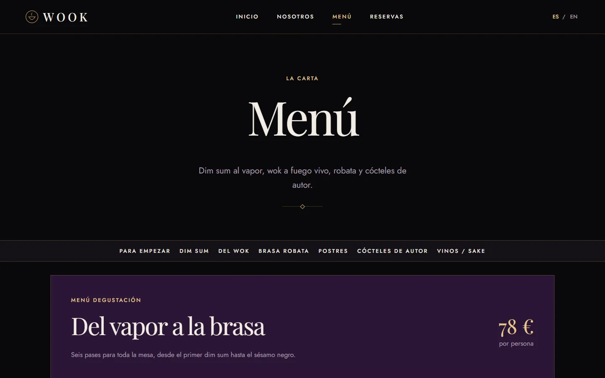
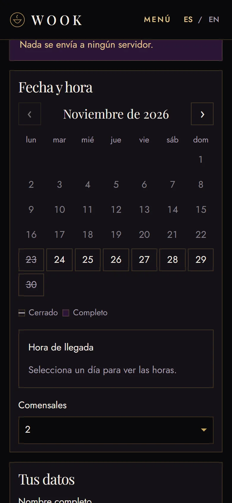

Gastronomía · Restaurante
WOOK

Proyecto de referencia / concepto: marca, datos y pagos son de demostración.
El reto
Presentar un restaurante de cocina asiática contemporánea y facilitar el paso de consultar la carta a reservar una mesa.
La solución
Una portada cinematográfica y fotografía gastronómica generada con IA marcan el tono. La carta y el calendario propio organizan la información para planear la visita.
- Negro
#0A090B - Dorado
#C9A45C - Morado
#2B1636
Tipografías · Playfair Display + Jost
Funcionalidades
- Portada y página del restaurante con historia, chef, horarios y ubicación.
- Carta por secciones, etiquetas dietéticas y menú degustación.
- Calendario de reservas con días cerrados o completos, franjas horarias, número de comensales, validación y confirmación.
- Sitio bilingüe ES/EN.
Galería
Capturas del proyecto


Siguiente proyecto
CAMBIO DE LLAVES